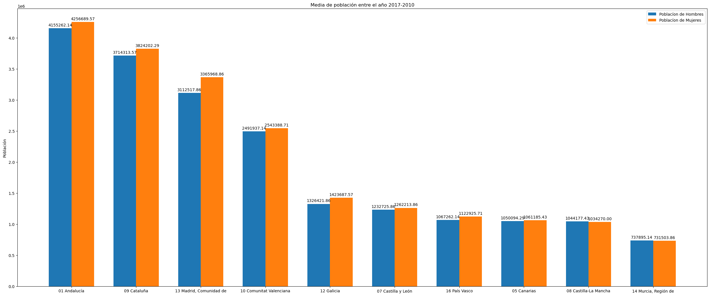

<table><thead><tr><th rowspan="2"></th><th colspan="7">Población de Hombres</th><th colspan="7">Población de Mujeres</th></tr><tr><td>2017</td><td>2016</td><td>2015</td><td>2014</td><td>2013</td><td>2012</td><td>2011</td><td>2010</td><td>2017</td><td>2016</td><td>2015</td><td>2014</td><td>2013</td><td>2012</td><td>2011</td><td>2010</td></tr></thead><tbody><tr><td>01 Andalucía</td><td>4.133.835,00</td><td>4.139.194,00</td><td>4.144.532,00</td><td>4.148.701,00</td><td>4.170.654,00</td><td>4.180.285,00</td><td>4.169.634,00</td><td>4.144.856,00</td><td>4.245.985,00</td><td>4.248.913,00</td><td>4.254.511,00</td><td>4.253.604,00</td><td>4.269.646,00</td><td>4.269.700,00</td><td>4.254.468,00</td><td>4.226.119,00</td></tr><tr><td>09 Cataluña</td><td>3.710.200,00</td><td>3.697.368,00</td><td>3.691.745,00</td><td>3.701.740,00</td><td>3.725.318,00</td><td>3.741.628,00</td><td>3.732.196,00</td><td>3.724.515,00</td><td>3.845.630,00</td><td>3.825.228,00</td><td>3.816.361,00</td><td>3.817.163,00</td><td>3.828.332,00</td><td>3.829.280,00</td><td>3.807.422,00</td><td>3.787.866,00</td></tr><tr><td>13 Madrid, Comunidad de</td><td>3.115.522,00</td><td>3.098.631,00</td><td>3.087.022,00</td><td>3.099.641,00</td><td>3.123.724,00</td><td>3.130.241,00</td><td>3.132.844,00</td><td>3.124.438,00</td><td>3.391.662,00</td><td>3.368.365,00</td><td>3.349.974,00</td><td>3.354.799,00</td><td>3.371.827,00</td><td>3.368.319,00</td><td>3.356.836,00</td><td>3.334.246,00</td></tr><tr><td>10 Comunitat Valenciana</td><td>2.436.203,00</td><td>2.448.748,00</td><td>2.460.805,00</td><td>2.475.081,00</td><td>2.534.539,00</td><td>2.546.404,00</td><td>2.541.780,00</td><td>2.542.949,00</td><td>2.505.306,00</td><td>2.511.220,00</td><td>2.519.884,00</td><td>2.529.763,00</td><td>2.579.276,00</td><td>2.582.862,00</td><td>2.575.410,00</td><td>2.568.757,00</td></tr><tr><td>12 Galicia</td><td>1.304.392,00</td><td>1.309.809,00</td><td>1.317.054,00</td><td>1.325.657,00</td><td>1.335.122,00</td><td>1.343.328,00</td><td>1.349.591,00</td><td>1.350.547,00</td><td>1.403.947,00</td><td>1.408.716,00</td><td>1.415.293,00</td><td>1.423.038,00</td><td>1.430.818,00</td><td>1.438.170,00</td><td>1.445.831,00</td><td>1.447.106,00</td></tr><tr><td>07 Castilla y León</td><td>1.195.251,00</td><td>1.206.775,00</td><td>1.219.616,00</td><td>1.232.250,00</td><td>1.246.377,00</td><td>1.261.141,00</td><td>1.267.671,00</td><td>1.268.860,00</td><td>1.230.550,00</td><td>1.240.744,00</td><td>1.252.436,00</td><td>1.262.540,00</td><td>1.273.498,00</td><td>1.284.937,00</td><td>1.290.792,00</td><td>1.290.655,00</td></tr><tr><td>16 País Vasco</td><td>1.066.905,00</td><td>1.065.580,00</td><td>1.065.925,00</td><td>1.066.369,00</td><td>1.068.746,00</td><td>1.070.438,00</td><td>1.066.872,00</td><td>1.064.708,00</td><td>1.127.253,00</td><td>1.123.954,00</td><td>1.123.332,00</td><td>1.122.616,00</td><td>1.122.936,00</td><td>1.122.655,00</td><td>1.117.734,00</td><td>1.113.631,00</td></tr><tr><td>05 Canarias</td><td>1.045.113,00</td><td>1.042.838,00</td><td>1.043.203,00</td><td>1.046.373,00</td><td>1.055.302,00</td><td>1.056.240,00</td><td>1.061.591,00</td><td>1.058.706,00</td><td>1.063.008,00</td><td>1.059.086,00</td><td>1.057.103,00</td><td>1.058.442,00</td><td>1.063.377,00</td><td>1.062.104,00</td><td>1.065.178,00</td><td>1.059.813,00</td></tr><tr><td>08 Castilla-La Mancha</td><td>1.016.761,00</td><td>1.022.722,00</td><td>1.032.673,00</td><td>1.043.880,00</td><td>1.056.960,00</td><td>1.069.648,00</td><td>1.066.598,00</td><td>1.059.149,00</td><td>1.014.718,00</td><td>1.018.909,00</td><td>1.026.518,00</td><td>1.034.731,00</td><td>1.044.038,00</td><td>1.052.240,00</td><td>1.048.736,00</td><td>1.039.224,00</td></tr><tr><td>14 Murcia, Región de</td><td>736.238,00</td><td>733.555,00</td><td>735.434,00</td><td>735.889,00</td><td>739.842,00</td><td>742.727,00</td><td>741.581,00</td><td>738.627,00</td><td>734.035,00</td><td>731.292,00</td><td>731.854,00</td><td>730.929,00</td><td>732.207,00</td><td>731.722,00</td><td>728.488,00</td><td>723.352,00</td></tr></body></table>